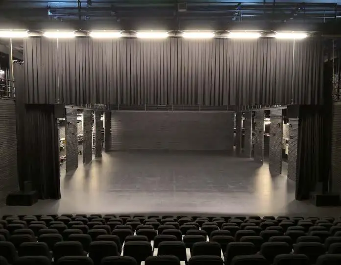
Teatro
Espacio destinado a presentaciones escénicas, espectáculos y encuentros culturales.
Conocer más
Información del espacio
Consulta las condiciones de uso, equipamiento y disponibilidad del teatro.
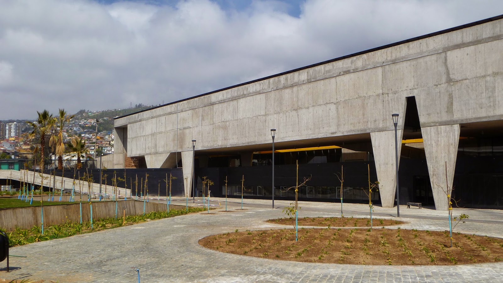
El Parque Cultural de Valparaíso cuenta con espacios para el encuentro, la creación, la formación y el desarrollo de actividades culturales. Descubre sus salas, zonas exteriores y espacios de uso comunitario.

Espacio destinado a presentaciones escénicas, espectáculos y encuentros culturales.
Consulta las condiciones de uso, equipamiento y disponibilidad del teatro.
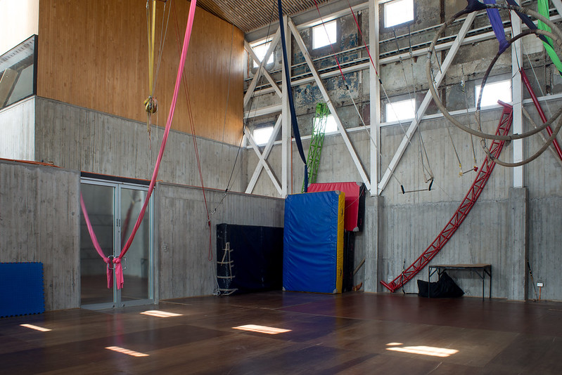
Sala dedicada a la práctica y exploración de las artes circenses.
Consulta las características del espacio y sus requisitos de utilización.
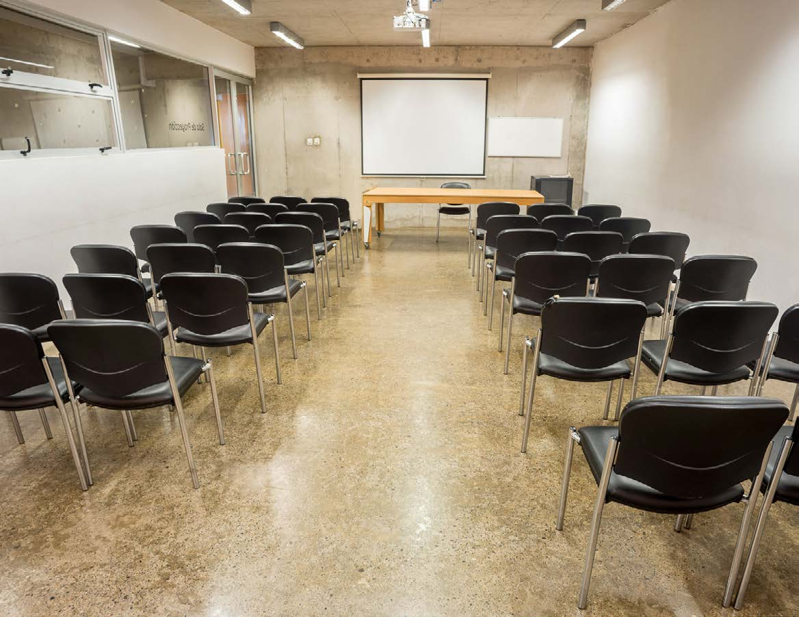
Espacio destinado a exhibiciones audiovisuales, presentaciones y actividades relacionadas con la imagen.
Solicita información sobre equipamiento audiovisual y condiciones de uso.
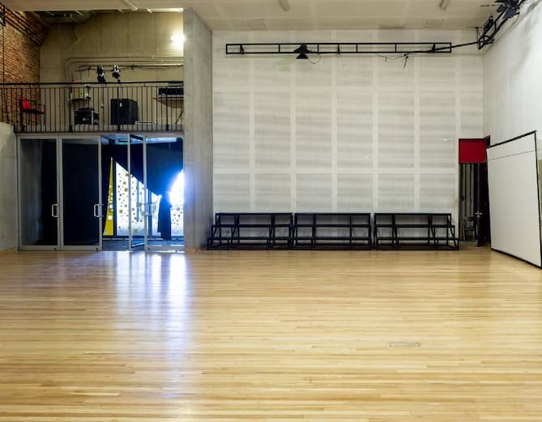
Espacio destinado al estudio, la investigación y el desarrollo de actividades creativas.
Consulta su modalidad de acceso y las condiciones de utilización.
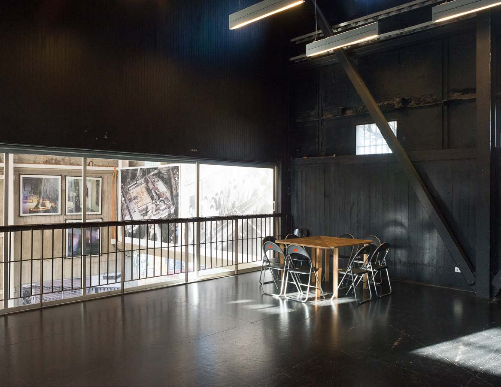
Salas destinadas al ensayo, la creación y los procesos vinculados a las artes escénicas.
Consulta las características de cada sala y sus condiciones de utilización.
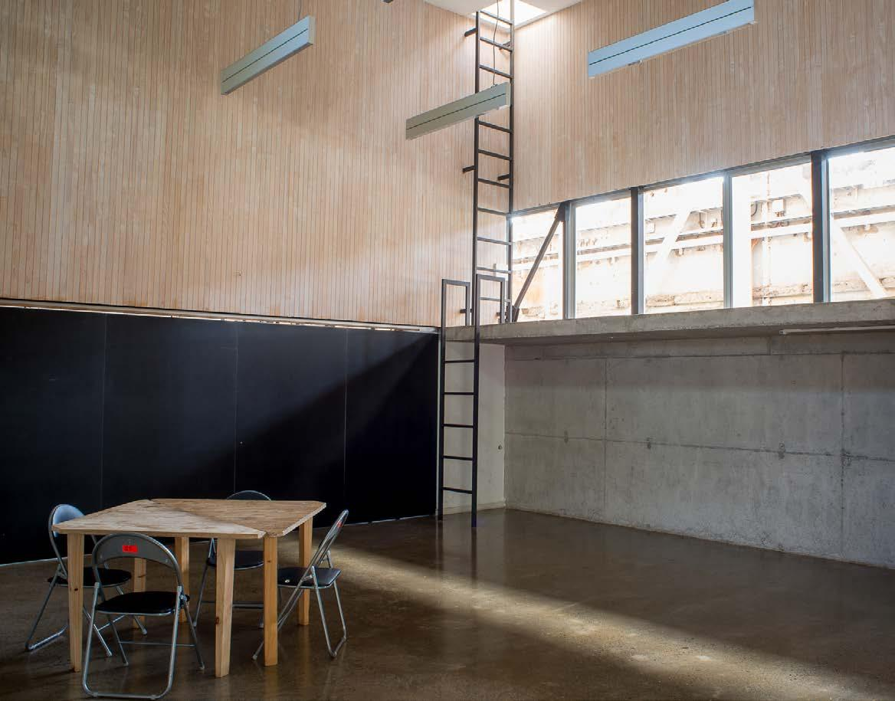
Conjunto de salas para el desarrollo de diferentes actividades culturales y procesos creativos.
Consulta la distribución y las características de cada sala.
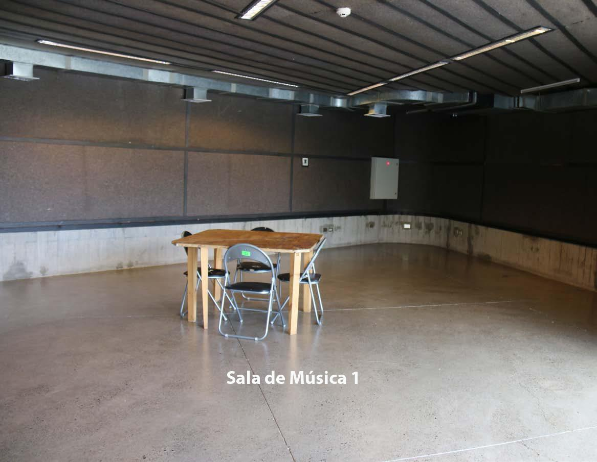
Salas destinadas a ensayos, prácticas y procesos de creación musical.
Consulta el equipamiento disponible y sus requisitos de uso.
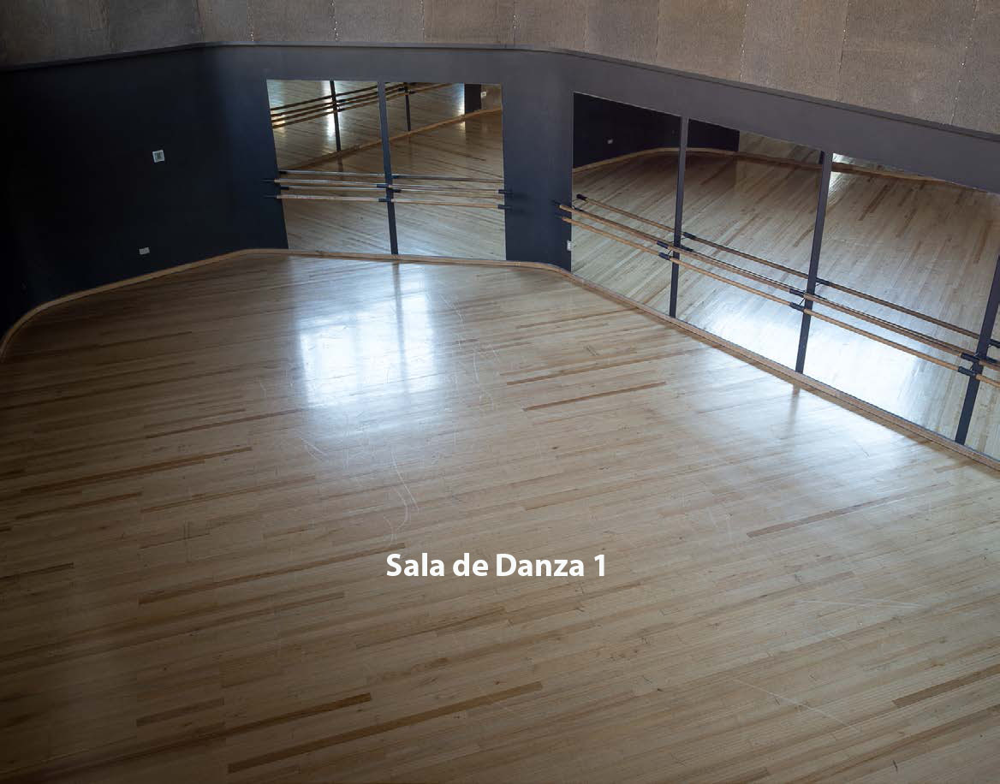
Espacios destinados a la expresión corporal, prácticas de movimiento y ensayos.
Consulta las condiciones de utilización y disponibilidad.
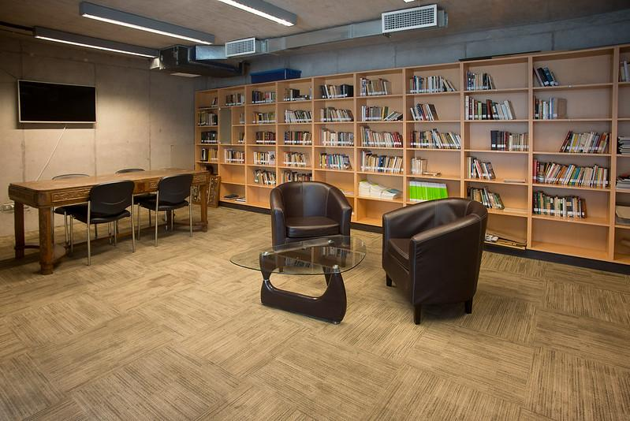
Espacio de lectura y encuentro orientado a las personas mayores.
Consulta las actividades y modalidades de acceso a este espacio.
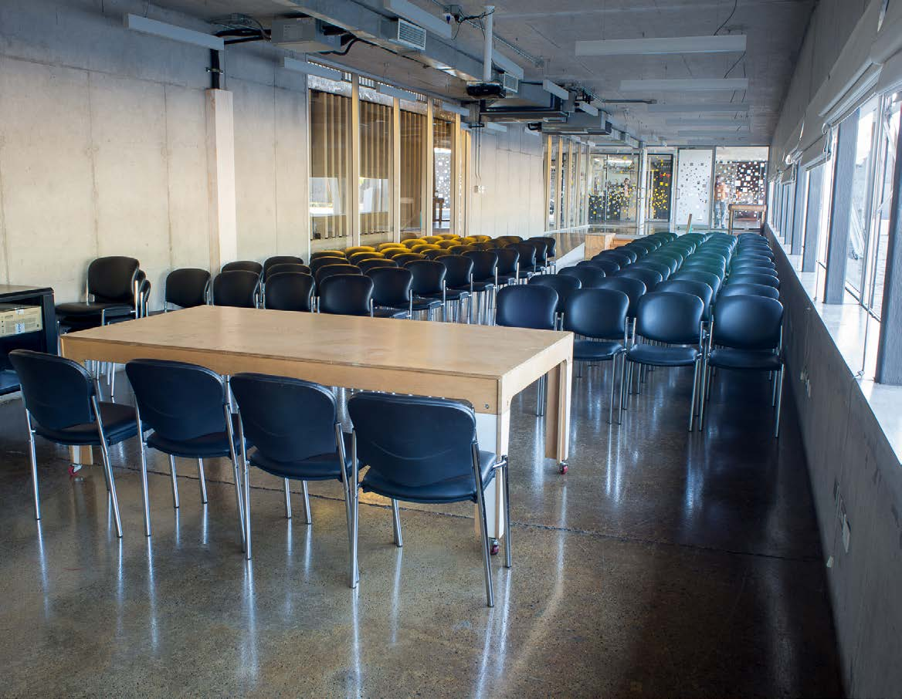
Espacio para la lectura, la consulta y el encuentro en torno a los libros.
Consulta sus horarios y condiciones de acceso.
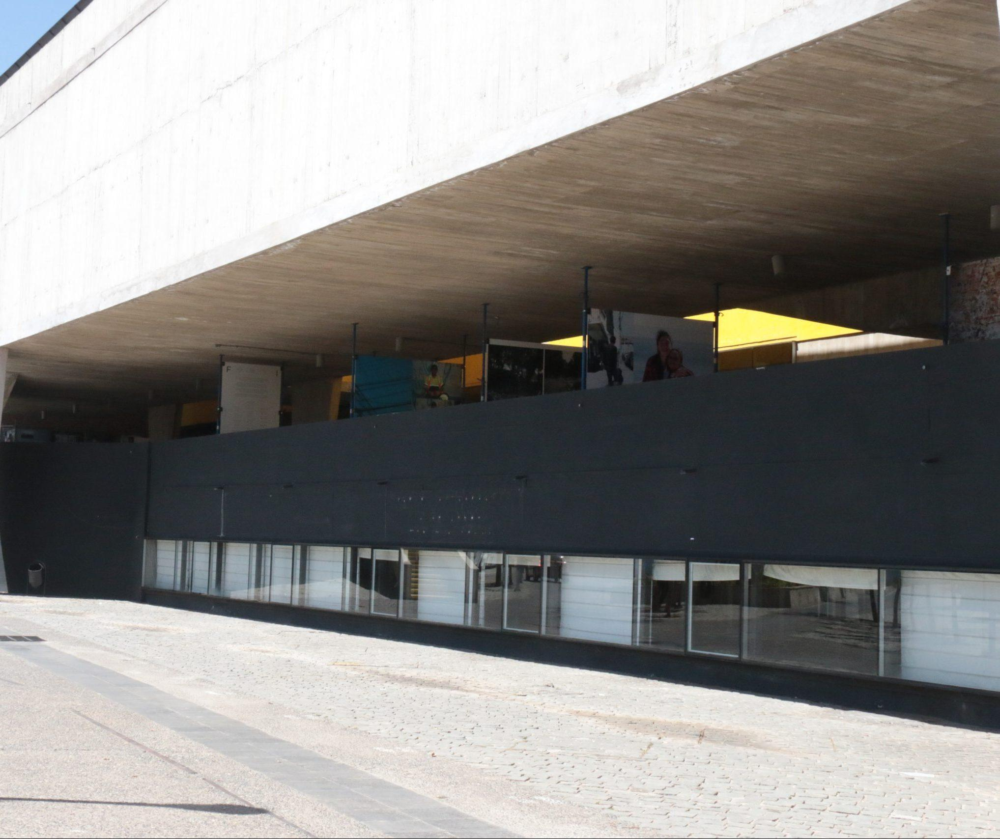
Áreas exteriores vinculadas al edificio de Difusión, parte del conjunto arquitectónico del parque.
Consulta las condiciones de utilización de estas áreas exteriores.
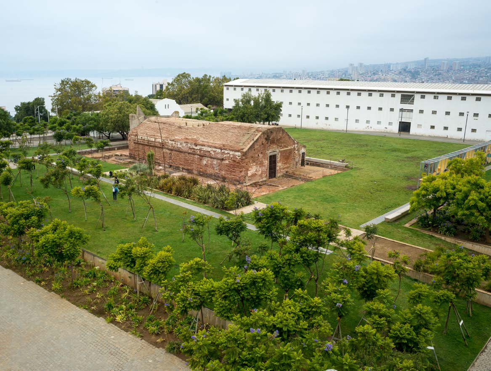
Espacio abierto de circulación, encuentro y actividades al aire libre.
Consulta las posibilidades de realización de actividades en este sector.
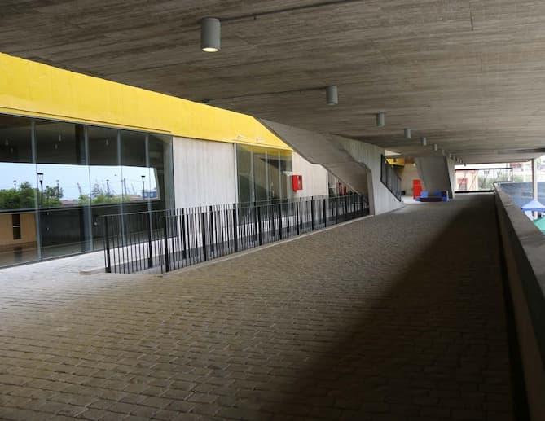
Espacio exterior situado en el nivel superior del edificio de Difusión.
Consulta su acceso y condiciones de utilización.
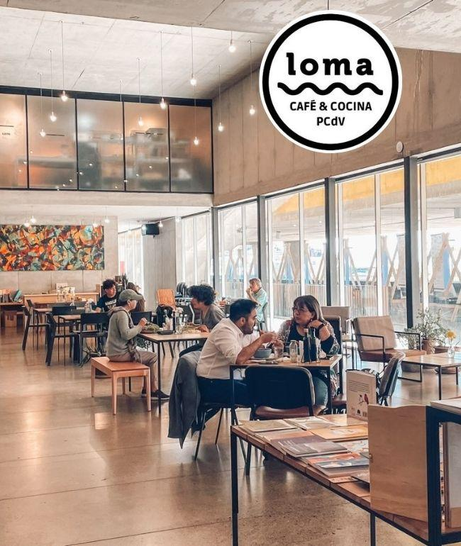
Espacio destinado al descanso, la alimentación y el encuentro entre quienes visitan el parque.
Consulta el funcionamiento y los servicios disponibles.
Edificio que forma parte de las instalaciones culturales del parque.
Puedes conocer su ubicación y distribución mediante el mapa interno.
Ver mapa internoSector destinado a la disposición de materiales para reciclaje.
Antes de utilizarlo, verifica los materiales aceptados y su ubicación.
¿Te interesa realizar una actividad en el Parque Cultural de Valparaíso? Consulta los requisitos, condiciones de uso y disponibilidad de sus espacios.
Consultar por correo¿Quieres ubicar los espacios dentro del parque?
Ver mapa interno ↗